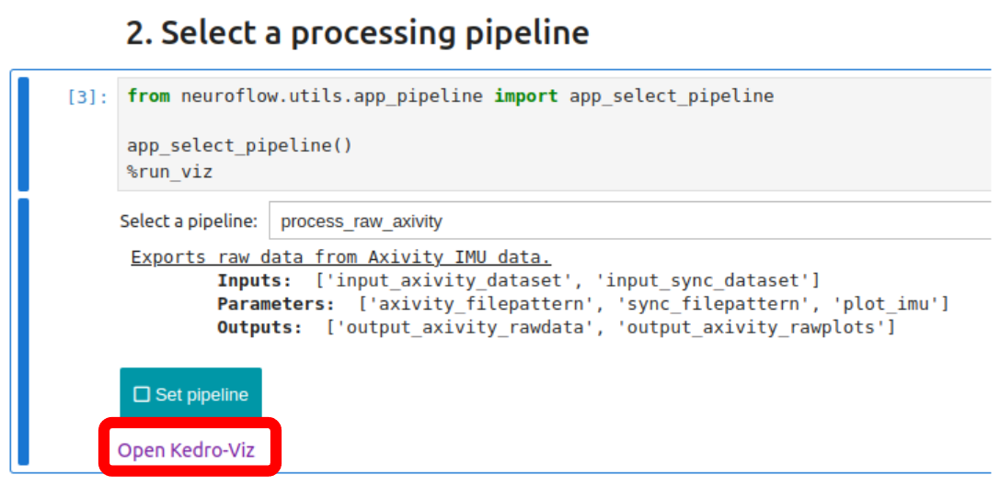
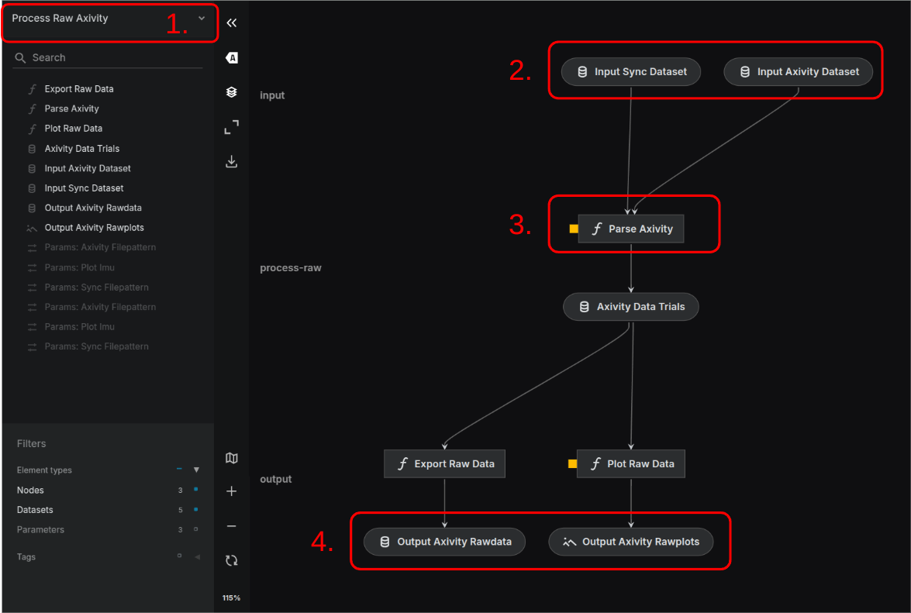
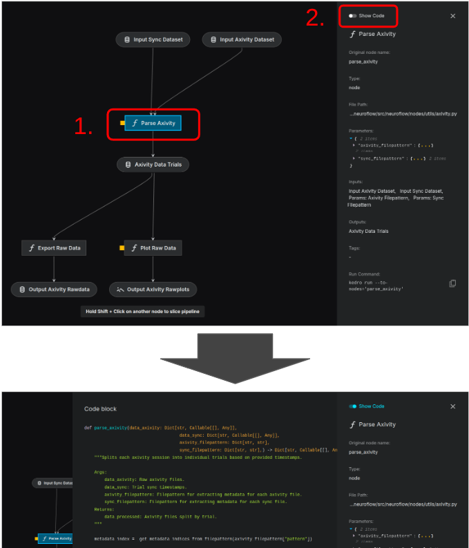

Exploring the pipelines#
Open Kedro-Viz appear in the cell output before proceeding.
Using the Viz tool#
Once ready, click on the Open Kedro-Viz link. A new browser tab should open with the following user interface:

The dropdown menu in the top-left allows you to select any one of the available pipelines for inspection.
Blocks at the top of the pipeline (labeled as
Input ...) show the input data needed for the pipeline.Blocks with a cursive f icon show the pipeline nodes (i.e. functions).
Blocks at the bottom of the pipeline (labeled as
Output ...) show the output data produced by the pipeline.
Pipeline nodes can be further inspected by clicking on the block to select it, then toggling Show Code:

Take your time to explore the different pipelines and their structures - we’ll be running the Project Naps
pipeline for our tutorial. When you’re ready, head back to the Jupyter Notebook.
Selecting a pipeline#
In Jupyter, above the Open Kedro-Viz link, there is also a dropdown to set the pipeline we want to run.
Select project_naps from the menu and you should see the cell output update to the following:
NAPS project pipeline.
Processes Axivity IMU data, extracts steps, and creates a step summary.
Inputs: ['input_axivity_dataset', 'input_sync_dataset', 'input_nimbal_pushoff']
Parameters: ['axivity_filepattern', 'sync_filepattern', 'step_parameters', 'plot_imu']
Outputs: ['output_axivity_rawdata', 'output_axivity_rawplots', 'output_axivity_stepdata', 'output_axivity_stepplots', 'output_axivity_stepprofiles', 'output_axivity_stepsummary']
Click the Set pipeline button, which should then turn green and read: Selected: project_naps.
With our pipeline set, we’re now ready to configure the data input catalogs.